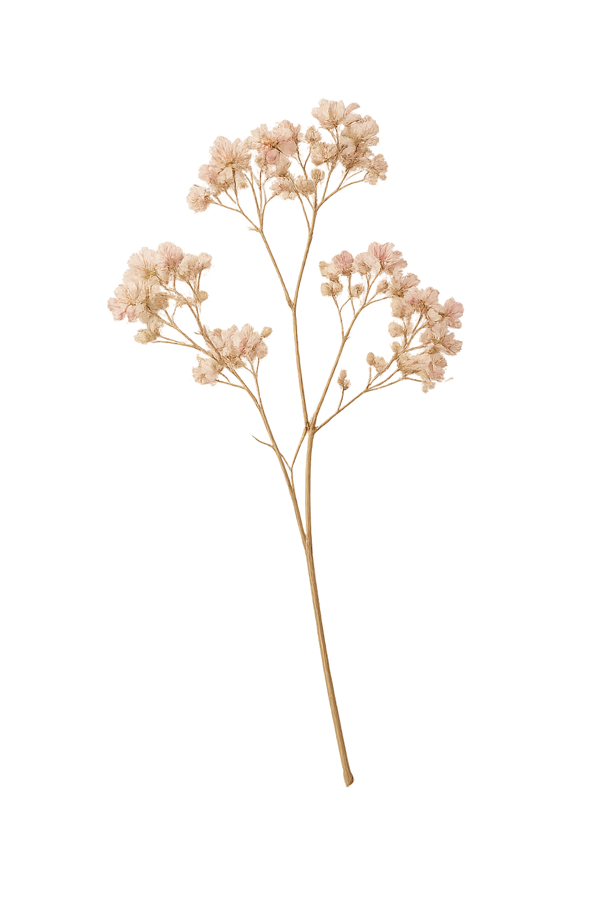

O Extraordinário do Cotidiano
Uma oficina de arte, memória e criação para mulheres que desejam desacelerar, observar e transformar pequenos fragmentos do dia em expressão.
Conhecer o projeto
O que é o projeto?
O Extraordinário do Cotidiano é uma proposta de encontro entre arte, memória, escrita, colagem e observação.
Através de pequenos convites criativos, cada participante é convidada a olhar para aquilo que normalmente passa despercebido: uma lembrança, uma fotografia, uma conversa, um objeto, uma flor encontrada no caminho.
Não é necessário saber desenhar ou ter experiência artística. O percurso valoriza a experiência, a presença e a criação como formas de escuta e expressão.
Um percurso simples, sensível e possível.
Um convite para perceber que a beleza não mora apenas nos grandes acontecimentos, mas também nos pequenos fragmentos que acompanham os nossos dias.
Para quem é?
- Mulheres que desejam voltar a criar.
- Pessoas que sentem falta de um espaço para si.
- Mulheres em momentos de transição.
- Pessoas que acreditam que a criatividade pode florescer em qualquer idade.
Como funciona?
A oficina é composta por encontros conduzidos através de propostas simples e acessíveis.
Cada atividade convida as participantes a observar, escrever, colecionar, desenhar, colar e construir pequenos registros do cotidiano.
O ritmo é tranquilo e respeita o tempo de cada pessoa. Não existem respostas certas, apenas caminhos diferentes.
O que será vivido e criado?
Pequenas experiências para transformar presença em registro, e registro em criação.
Por que este projeto importa?
Vivemos em um tempo de pressa.
Muitas vezes esquecemos que a criatividade não é um talento reservado a poucas pessoas, mas uma forma de estar presente no mundo.
O Extraordinário do Cotidiano nasce do desejo de oferecer um espaço de pausa, encontro e expressão, onde as pequenas coisas possam recuperar seu valor e onde cada participante possa construir um registro afetivo da própria caminhada.
Formatos
O projeto pode se adaptar a diferentes espaços, grupos e necessidades.
Oficina presencial
Encontros em grupo, em bibliotecas, espaços culturais e instituições.
Projetos especiais
Versões adaptadas para centros culturais, universidades e projetos comunitários.
Formato online
Possibilidade de encontros virtuais e materiais digitais.
Talvez aquilo que parece comum seja justamente o que merece ser guardado.
Um convite para desacelerar, observar e transformar pequenos fragmentos do cotidiano em criação.
Quero saber mais